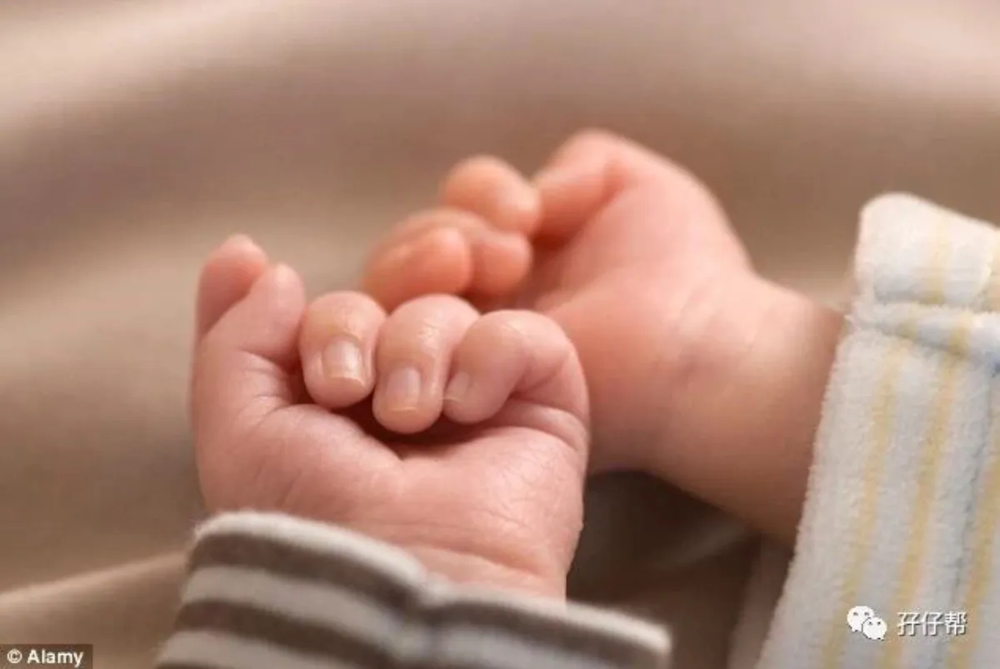
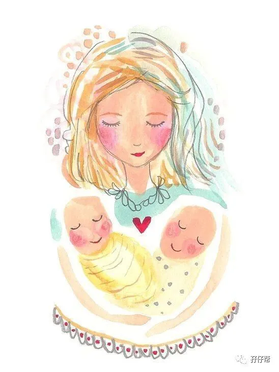
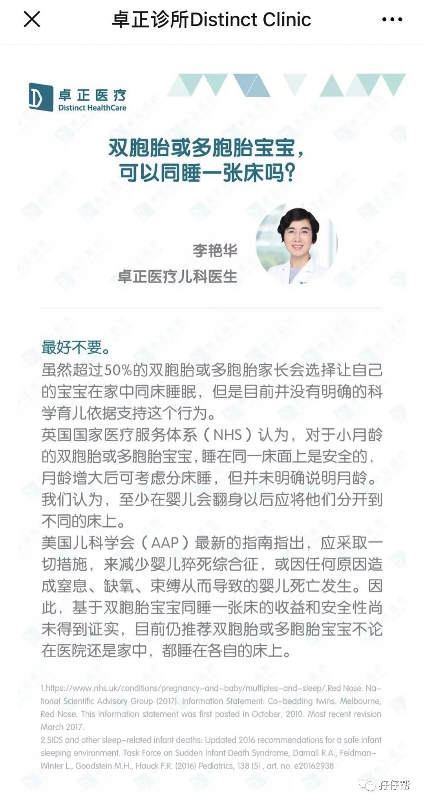
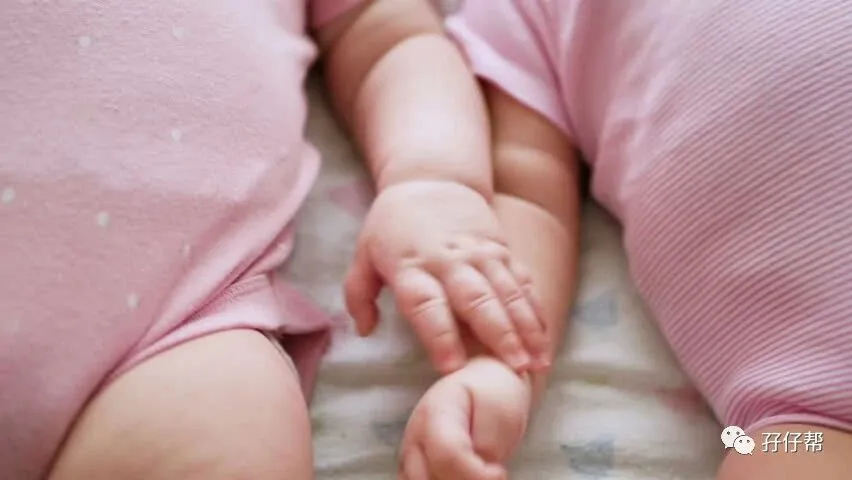

【帮主】圆圈妈妈：
这是孖仔帮双胎专栏【孖妈来了】的第三篇文章，来自双胞胎大小宝妈妈的投稿。
养育双胞胎付出的时间精力的确是单胎的两倍，不止！尤其是在双胞胎宝宝出生后的头三个月，那日子简直是一地鸡毛，两处鹅粪，满屋屎尿屁…
双胞胎大小宝妈妈以过来人经历分享0—3个月双胞胎宝宝的一些注意事项,看看有没有找到点养育双胞胎的思路！
· 正 · 文 · 来 · 啦 ·
双胞胎大小宝妈妈：
我是单绒单羊双胞胎妈妈，胎龄34周+5，顺产一对双胞胎姐妹花，4.3斤/4.2斤。由于姐妹俩早产，喂养上异常艰辛，这一路走来真的是一把鼻涕一把泪，应圆圈妈妈的邀请总结了一些经验教训给大家参考哈！祝愿所有双胞胎宝宝们都能健康成长！
1，找不同点，尽早区分
Happy Halloween
姐妹俩是同卵双胞胎，相貌一模一样，偏偏我们准备的小衣物也是一样款式和颜色，我们刚开始真的是一脸懵逼，时常恍惚，傻傻分不清，导致很多不必要的麻烦。
为了避免乌龙事件再次发生，我们想到一个最经典的方法：按照她们在娘肚里的排列模式，给她们准备了银镯子，姐姐左手带一只，妹妹右手带一只，即便如此，还是会经常搞混。
建议大家不要给双胞胎买完全一模一样的衣服，不同款式，不同颜色方便区分，还有就是细心观察，早点发现双胞胎宝宝的不同之处，便于以后的睡眠训练！
2，醒来的先处理
Happy Halloween
虽然姐俩来自同一个胎盘，理论上应该是神同步，但是实际作息根本不一致，要是你的双胞胎宝宝步调一致，那恭喜你，这相当于中了五百万，第二天又中了五百万。
我家是这样的：姐姐总是先醒来，妹妹还在睡，这个时候，我们会赶紧先把醒来的姐姐抱走，看看是否需要喝奶，换尿布等，免得妹妹醒来之后，所有事情都挤在一起，我们都分身无术。
刚开始我们是新手没经验，亲眼目睹她们一起吵奶喝那鬼哭狼嚎撕心裂肺的惨叫声，真的永生难忘，再也不想经历第二次，于是就学精了！
此处温馨提示：虽然是双胞胎，但每个宝宝都有自己的生物钟，头三个月基本上就是吃睡，不必刻意地把她们的作息调成一致，尤其是早产的双胞胎宝宝，发育还不够完善，遵从天性吧！
3，轮流安慰
Happy Halloween
好多妈妈都提到一个内疚感问题：就是两宝同时哭时，不知道该抱哪个，不管先抱哪个都觉得自己罪孽深重，给不到双胞胎百分百的爱！
我觉得不必要这样绑架自己！先抱哪个不重要，重要的是你确实已经在尽自己最大的努力去回应宝宝们爱的呼唤了！轮流安慰也无妨，也不差那一会儿！
当姐妹俩同时哭的时候，没有人手帮助时，我会先抱一个安抚下，另一个塞安抚奶嘴，隔一会儿再抱另一个，若她们哭得更凶，那就左右开弓，同时抱住，共享妈妈的怀抱。
我觉得没有什么好内疚的，尽力做好就行，让双胞胎从小学会等待，学会分享也是个不错的主意！
4，日常生活记录很重要
Happy Halloween
现在网上有很多育儿APP，可以同时记录两宝宝的吃喝拉撒睡，只需要看历史记录就可以轻松掌握到双胞胎的作息，如大宝吃了多少奶，小宝几点睡。隔了多久喝的奶，啥时候换的尿布。
因为是老人家帮忙带，不会使用手机，只能用一个小本子手写记录下来！这个密密麻麻写满数字和文字的小本子承载着许多苦逼但美好的回忆！
温馨提示：记录两宝宝的日常，可以帮助我们早日找到双胞胎的生活起居规律，为睡眠训练做准备，早产儿双胞胎更加应该做这样的记录，随时监测喂养情况，当发育不达标时，可以从记录本中找到点线索，从而做出适当调整。
5，同时喝奶
Happy Halloween
不管是配方奶还是母乳，我建议同时喂奶，这个“同时”不是指分秒不差地执行，相隔30分钟以内都问题不大！
我们家的是混合喂养，姐姐这顿吃母乳，妹妹吃配方奶，下一顿就轮到妹妹吃母乳，姐姐吃配方奶。
这里可能会出现一个问题，有些宝宝只接受乳头，不肯咬奶嘴，有些宝宝却相反。
姐妹俩刚开始也出现这种情况，妹妹只喜欢瓶喂，不喜欢亲喂，家人也劝我一个奶粉，一个母乳也没关系，但我却在喝奶这件事情上执意要求她们必须一样，奶粉和母乳都必须喝！妹妹饿过几次后，感觉到我的坚决，于是挣扎了几天就接受了亲喂！让我感动到想哭！因为连我自己都感觉拗不过她，快要妥协放弃了，她居然就肯喝母乳了！
6，同时睡
Happy Halloween
与一起喂奶同一个道理，自然是希望双胞胎一起睡，但让两宝宝同时睡比让她们一起喝奶还要艰难上百倍。
当你把所有哄睡歌唱完，并循环好几次了，你依然在黑暗中看到一双贼溜溜的眼睛瞪着你，似有若无地笑，朝你吐舌头，扮鬼脸，你肯定会被打败的！那就....
慢慢来吧！
个人觉得，小月龄的宝宝无需过分强调调整她们的作息。
我曾经很执着地要求她们必须这个时辰要怎样，那个时辰该怎样，但都被现实打败了，这其中有很多原因，而且很复杂，反正不管什么原因，这样不顾实际地调整作息真的好难，最后内伤的还是自己。
人家的是天使宝宝，而我们家的是混世魔王，没法比！还是尊重她们的天性使然，等时机成熟再做打算。
7，同床睡和分开睡
Happy Halloween
那天看卓正医疗公众号上有一个问题答疑！如图所示！
我觉得，是这个理！可参考！
小月龄时把双胞胎放在一起睡，发现相互干扰的情况太严重了就适时分开，具体什么时候分开，并不局限于哪个月龄，而是看信号！
我买的是可拆分的双胞胎婴儿床，刚开始放一起睡，没啥问题，但是到了第二月时，发现姐姐特别睡渣，总是睡觉哼哼唧唧的，自己哭就算了，还把妹妹给吵醒，折腾到所有人都睡不好，于是果断拆分开独立的小床，放在不同的房间。
8，不必要穿一模一样
Happy Halloween
我发现老一辈对双胞胎宝宝似乎格外上心，姐妹俩的外婆对双胞胎必须穿一样特别坚定不移！
有时姐姐溢奶弄湿了衣领，需要换衣服，而妹妹并没有弄脏，这种情况下，她们的外婆会不厌其烦地把她们两个衣服都换上新的，且必须是一模一样的！
我和老公经常为此哭笑不得，想着这不是原则性问题，只要老人家高兴就算了吧！但衣服该穿多穿少这件事，我是不赞同她这样绝对一致的。
即便她们姐妹俩是双胞胎，依然有个体上的差别，妹妹爱出汗，怕热，可以适当穿少点，姐姐总是手脚冰凉，反而需要多穿点。
温馨提示：养育双胞胎总免不了需要人手帮忙，不管照料者是谁，均需要达成共识，不要一个人使劲往宝宝身上加衣服，另一个人却觉得多此一举没穿一会儿就脱掉！最后受苦受累是双胞胎宝宝，大人们也因此闹不愉快！
双胞胎大小宝妈妈寄语：
之前听有经验的过来人如是说！
大约满月之后，两个宝宝就会发现对方，在很多情况下，一个宝宝哭，另一个马上跟着哭；而第一个哭的孩子马上停止，侧耳倾听，第二个也跟着停止。有时候两个宝宝还会互相“啊啊”点头致意。
她们刚出生那会儿，我就很期待这一刻的到来！那画面一定美极了！
实际呢！她们姐妹俩好像谁也不认识谁似的，完全忘记她们曾经在一个名叫子宫的小房间里共同呆了238天！
没有互动，没有交流，只有一起哭的时候，最默契！一个比一个大声！
还好，我只是期待，并没有当真！反正，总会有那么一天的！
养育双胞胎，日子还长着呢！还有很多日常杂碎的注意事项，欢迎大家来双胞胎社群一起交流探讨哦！
原文作者/双胞胎大小宝妈妈
编辑排版/圆圈妈妈
写手招募
如果你是爱分享的双胞胎爸爸或妈妈
欢迎投稿至孖仔帮【双胎专栏】
分享出你和双胞胎的成长故事
添加圆圈妈妈微信sgguy-com
备注“投稿”
互动话题
留言区说说呗
你觉得养育双胞胎啥时候最难带？
一关注孖仔帮一



